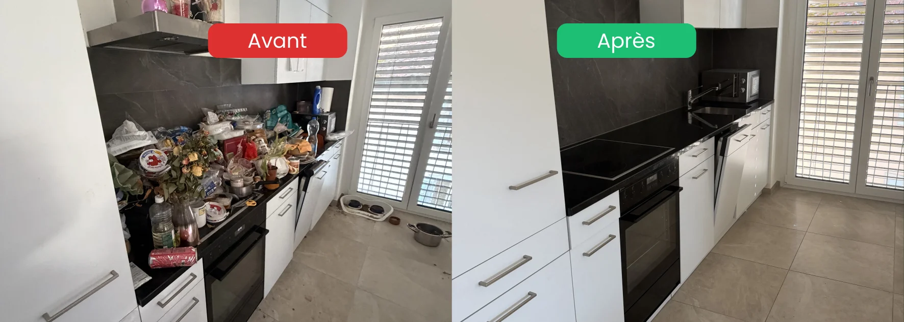

- 4 étapes obligatoires : débarras/décapage → nuisibles → désinfection → désodorisation
- L'ordre est crucial : désinfecter avant d'éliminer les nuisibles = travail inutile
- Risques sanitaires réels : moisissures, bactéries, nuisibles, poussières dangereuses
- EPI indispensables : combinaison, masque FFP3, gants nitrile — sans négociation
- Faire seul : possible pour des cas légers, risqué pour tout le reste
Pourquoi un logement insalubre demande un protocole spécifique
Un logement insalubre n'est pas un logement sale. C'est un logement où les conditions d'hygiène représentent un risque réel pour la santé — moisissures toxiques, bactéries pathogènes, nuisibles, accumulation de déchets organiques, odeurs persistantes ancrées dans les matériaux.
Trois erreurs fréquentes quand on s'improvise dans ce type d'intervention :
Erreur 1 — Commencer par nettoyer sans désencombrer. Frotter des surfaces entourées d'objets encombrants est inutile. L'accès aux zones contaminées est impossible, et les résidus se redistribuent sur les surfaces qu'on vient de nettoyer.
Erreur 2 — Désinfecter avant de traiter les nuisibles. Si des insectes, rongeurs ou parasites sont présents, la désinfection ne sert à rien tant qu'ils circulent librement dans le logement. Le traitement des nuisibles doit précéder la désinfection des surfaces.
Erreur 3 — Masquer les odeurs au lieu de les neutraliser. Un spray désodorisant couvre les odeurs pendant 20 minutes. Les molécules organiques responsables des odeurs persistantes sont ancrées dans les matériaux (murs, sols, joints) et nécessitent un traitement chimique spécifique pour être détruites.
Étape 1 : débarras et décapage des salissures
C'est le point de départ obligatoire. Aucune désinfection sérieuse ne peut avoir lieu tant que le logement n'est pas désencombré et les couches de salissures éliminées.
Le débarras
Évacuation de tout ce qui ne reste pas dans le logement : objets abandonnés, déchets accumulés, mobilier hors d'usage, encombrants. Cette étape se fait toujours en accord avec la famille ou le propriétaire — rien n'est jeté sans validation.
Le tri se fait en trois flux simultanés :
- Ce qui est conservé par la famille
- Ce qui peut être donné ou recyclé
- Ce qui part en déchetterie
Le décapage des salissures incrustées
Une fois le logement désencombré, les surfaces révèlent leur état réel : dépôts graisseux épais en cuisine, résidus organiques sur les sols, incrustations sur les sanitaires. Ces couches doivent être éliminées avec des produits dégraissants professionnels avant toute désinfection — sans quoi le désinfectant agit sur la couche de saleté, pas sur la surface à assainir.
Les zones prioritaires à ce stade :
- Cuisine : hotte, four, plans de travail, sols
- Sanitaires : WC, lavabo, douche ou baignoire
- Sols de toutes les pièces
- Murs et plinthes si nécessaire

Étape 2 : traitement des nuisibles
Si des nuisibles sont présents — rongeurs, cafards, puces, mites, acariens — cette étape est non négociable avant la désinfection. Un logement traité chimiquement mais toujours infesté de nuisibles vivants est un logement qui redeviendra contaminé en quelques jours.
Les signaux de présence de nuisibles
- Rongeurs : crottes visibles, traces de morsures, nids dans les placards ou derrière les appareils
- Cafards : présence dans la cuisine, sous l'évier, derrière le réfrigérateur
- Puces : piqûres sur les chevilles en entrant dans le logement
- Mites : dégâts sur les textiles, présence dans les armoires
Ce que le traitement implique
Le traitement des nuisibles demande un professionnel certifié (entreprise de dératisation/désinsectisation). Il inclut des produits biocides réglementés dont l'utilisation nécessite des compétences spécifiques — certains ne sont accessibles qu'aux professionnels titulaires de certifications reconnues.
Après le traitement, un délai est nécessaire avant d'entrer dans le logement — selon le produit et la superficie, ce délai varie de quelques heures à 48h.
Étape 3 : désinfection et assainissement complet
C'est l'étape centrale. Elle vise à éliminer les agents pathogènes invisibles — bactéries, virus, champignons, moisissures — qui se sont développés dans le logement.
Les zones prioritaires à désinfecter
| Zone | Risques principaux | Traitement |
|---|---|---|
| WC et sanitaires | Bactéries fécales, virus | Désinfectant bactéricide + fongicide |
| Cuisine | Contamination alimentaire, bactéries | Désinfection surfaces + joints |
| Zones humides | Moisissures toxiques | Traitement antifongique spécifique |
| Sols | Bactéries, parasites | Désinfection après lavage |
| Poignées, interrupteurs | Contact répété, transmission virale | Désinfection systématique |
| Joints silicone | Moisissures ancrées | Remplacement si nécessaire |
Les moisissures : un point particulier
Les moisissures dans un logement insalubre ne se traitent pas avec du vinaigre blanc ou un produit ménager standard. Selon l'ampleur et le type de moisissures, le traitement va du nettoyage avec un fongicide professionnel jusqu'au remplacement des matériaux contaminés (joints, plaques de plâtre, bois).
Certaines moisissures toxiques (notamment Stachybotrys chartarum, la « moisissure noire ») peuvent provoquer des troubles respiratoires graves. Leur traitement demande un équipement de protection complet et des produits adaptés.
Étape 4 : désodorisation et neutralisation des odeurs
Les odeurs persistantes d'un logement insalubre ne disparaissent pas avec le nettoyage. Elles sont ancrées dans les matériaux poreux — murs, sols, joints, bois — sous forme de molécules organiques qui continuent de se libérer dans l'air longtemps après l'intervention.
Deux niveaux de désodorisation
Niveau 1 — Désodorisation chimique : application d'un neutralisant d'odeurs concentré sur les surfaces. Ces produits attaquent les molécules organiques responsables des odeurs à la source, plutôt que de les masquer.
Niveau 2 — Fogger désodorisant (brouillard chimique) : pour les cas sévères, une bombe désodorisante auto-percutante diffuse un brouillard dans l'ensemble du volume du logement, atteignant les zones inaccessibles (jointures, espaces entre murs, systèmes de ventilation). Le logement est fermé plusieurs heures après le traitement.
Ce qui ne fonctionne pas
- Les sprays parfumés du commerce (masquent l'odeur 20-30 minutes)
- L'aération seule (insuffisante si les matériaux sont contaminés)
- Le bicarbonate (efficace comme absorbant préventif, pas curatif sur des odeurs ancrées)
Ce que vous ne devriez pas faire seul
Pour un logement légèrement encrassé, un particulier motivé et bien équipé peut s'en sortir. Pour tout le reste, les risques sont réels.
| Situation | Faire seul | Appeler un pro |
|---|---|---|
| Encombrement léger, logement entretenu | ✅ Possible | Optionnel |
| Moisissures superficielles (< 0.5 m²) | ✅ Avec produit adapté | Recommandé |
| Présence de nuisibles | ⚠️ Risqué | ✅ Nécessaire |
| Moisissures étendues ou toxiques | ❌ Dangereux | ✅ Indispensable |
| Odeurs ancrées dans les matériaux | ❌ Inefficace | ✅ Indispensable |
| Contamination organique importante | ❌ Risque sanitaire | ✅ Indispensable |
| Logement insalubre après décès | ❌ Risque émotionnel + sanitaire | ✅ Indispensable |
FAQ – Nettoyage d'un logement insalubre
Combien de temps dure une intervention complète dans un logement insalubre ?
Entre 1 et 5 jours selon la surface et l'ampleur de la dégradation. Pour un appartement de 3.5 pièces avec un niveau d'insalubrité moyen (sans nuisibles majeurs), comptez 2 à 3 jours. Pour une maison avec plusieurs années d'accumulation, une semaine ou plus peut être nécessaire.
Peut-on habiter le logement pendant l'intervention ?
Non. Le logement doit être inoccupé pendant toute la durée de l'intervention, et particulièrement pendant les traitements de désinfection et de désodorisation par fogger. Un délai de ventilation est nécessaire après certains traitements avant toute réoccupation.
Faut-il prévenir les voisins ou la régie avant une intervention ?
Pas obligatoirement, mais c'est recommandé pour le traitement des nuisibles (les rongeurs et insectes peuvent migrer vers les logements adjacents lors du traitement). La régie peut également être informée si des travaux de remplacement de matériaux sont nécessaires.
Les odeurs reviennent-elles après une désodorisation professionnelle ?
Non, si le traitement est complet. Un neutralisant professionnel détruit les molécules organiques à la source. En revanche, si des matériaux saturés n'ont pas été remplacés, les odeurs peuvent persister. C'est pourquoi notre évaluation initiale identifie systématiquement les matériaux qui doivent être remplacés plutôt que traités.
Combien coûte un nettoyage professionnel de logement insalubre en Suisse romande ?
Le prix dépend de la surface, de l'état du logement et des étapes nécessaires. Un devis personnalisé après photos ou visite est indispensable — il est impossible de donner un chiffre sérieux sans évaluation réelle. Nous établissons ce devis gratuitement, sous 24h, sans engagement.
En résumé
Le nettoyage d'un logement insalubre suit un protocole en 4 étapes non négociables : débarras et décapage des salissures, traitement des nuisibles, désinfection complète des surfaces et de l'air, désodorisation en profondeur. L'ordre de ces étapes est crucial — en sauter une ou en inverser deux compromet l'ensemble du résultat. Pour les situations légères, un particulier équipé peut intervenir. Pour tout le reste — nuisibles, moisissures étendues, odeurs ancrées, contamination organique importante — faire appel à un professionnel n'est pas un confort, c'est une nécessité sanitaire.
Vous faites face à un logement insalubre dans la Broye ou en Suisse romande ?
Intervention discrète · Sans jugement · Réponse sous 24h · EPI complets
Demander un devis gratuit et confidentiel →- 143 — La Main Tendue : écoute anonyme 24h/24
- CMS (Centre médico-social) : aide à domicile et accompagnement social
- Pro Senectute : soutien aux personnes âgées et à leur famille
- Pro Mente Sana : information et soutien en santé mentale
- Votre médecin traitant : premier interlocuteur de confiance